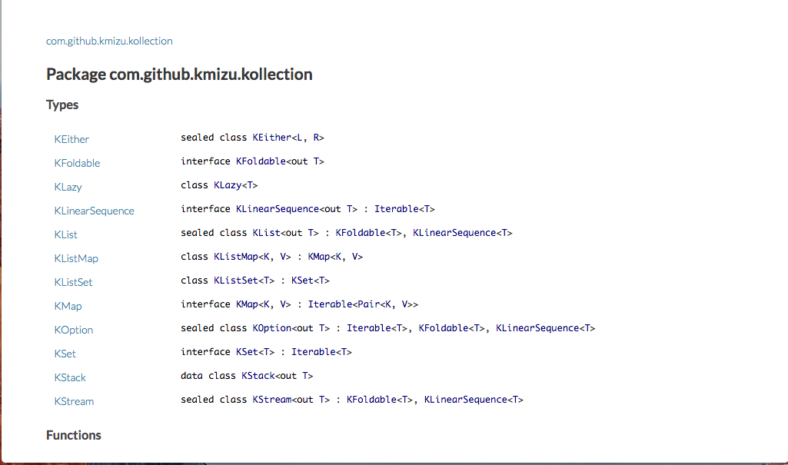

<!doctype html>
<html lang="ja">

	<head>
		<meta charset="utf-8">

		<title>kollectionの紹介</title>

		<meta name="description" content="kollectionの紹介">
		<meta name="author" content="Kota Mizushima">

		<meta name="apple-mobile-web-app-capable" content="yes">
		<meta name="apple-mobile-web-app-status-bar-style" content="black-translucent">

		<meta name="viewport" content="width=device-width, initial-scale=1.0, maximum-scale=1.0, user-scalable=no, minimal-ui">

		<link rel="stylesheet" href="css/reveal.css">
		<link rel="stylesheet" href="css/theme/black.css" id="theme">
<style type="text/css">
  .reveal h1,
  .reveal h2,
  .reveal h3,
  .reveal h4,
  .reveal h5,
  .reveal h6 {
    text-transform: none;
  }
</style>

		<!-- Code syntax highlighting -->
		<link rel="stylesheet" href="lib/css/zenburn.css">

		<!-- Printing and PDF exports -->
		<script>
			var link = document.createElement( 'link' );
			link.rel = 'stylesheet';
			link.type = 'text/css';
			link.href = window.location.search.match( /print-pdf/gi ) ? 'css/print/pdf.css' : 'css/print/paper.css';
			document.getElementsByTagName( 'head' )[0].appendChild( link );
		</script>

		<!--[if lt IE 9]>
		<script src="lib/js/html5shiv.js"></script>
		<![endif]-->
	</head>

	<body>

		<div class="reveal">

			<!-- Any section element inside of this container is displayed as a slide -->
			<div class="slides">
				<section data-markdown data-separator="^\n---$"><script type="text/template">

## kollectionの紹介
   第3回Kotlin勉強会＠Sansan
## Kota Mizushima
### 構文解析友の会
### プログラミング言語友の会

---

## 自己紹介
* Twitter: [@kmizu](https://twitter.com/kmizu)
* GitHub: [kmizu](https://github.com/kmizu)
* 構文解析おじさん & プログラミング言語オタク 
* Scalaエヴァンジェリスト
* 趣味：プログラミング言語|形式言語の自作
  * [Onion](https://github.com/onionlang/onion)
  * [Klassic](https://github.com/klassic/klassic)
  * [Macro PEG](https://github.com/kmizu/macro_peg)
  * , etc.

---

## kotlin.collections

* Kotlinのコレクションライブラリ
* 大部分は`java.util.*`のラッパ
  * 実体としては同じだが型だけ違う
* 可変コレクション
  * MutableList, MutableMap, MutableSet, etc.
* 読み取り専用ビュー
  * List, Map, Set, etc.
  * 「不変」コレクションではない点に注意

---

## 不変 VS. 読み取り専用

* 不変の場合、ある変数が指すオブジェクトは絶対に変わらない
* 読み取り専用の場合、特定の変数経由でオブジェクトが変更できないことしか保証しない
* Kotlin標準ライブラリ(stdlib)は不変コレクションを提供しない
  * 読み取り専用ビューのみ

```kotlin
>>> val m = arrayListOf(1, 2, 3)
>>> m
[1, 2, 3]
>>> val n: List<Int> = m
>>> n
[1, 2, 3]
>>> m.add(4)
true
>>> n
[1, 2, 3, 4] //中身が書き換わっている！
```

---

## 不変コレクションの利点
* 安心して引数として渡したり返り値にできる
  * 異なるスレッド間で安全に共有できる
  * 引数として受け取ったコレクションをフィールドに安全に代入できる
* 読み取り専用ビューはどちらも提供しない

Kotlinにも
不変コレクションライブラリが欲しい！

---

## kollection
* https://github.com/kmizu/kollection
* Kotlin用不変コレクションライブラリ
* latest: 0.3
  * 今日リリースした

```
dependencies {
  compile "com.github.kmizu:kollection:0.3"
}
```

---

## kollectionが提供するコレクション（0.3）

* KList: 不変リスト
* KStream: 不変遅延リスト
* KOption: Optional
* KStack: 不変スタック
* KListSet: KListによるSet実装
* KListMap: KListによるMap実装
* KLazy: 遅延初期化セル

---

## KList

* コンスセルベースの不変リスト

```kotlin
val a = 1 cons (2 cons (3 cons (4 cons (5 cons Nil))))
val b = KList(1, 2, 3, 4, 5)
a == b
```

```kotlin
val a = KList(KList(1, 2), KList(3, 4), KList(5, 6))
val result = a.sum(KMonoid.KLIST())
result == KList(1, 2, 3, 4, 5, 6)
```

```kotlin
val a = Klist(1, 2, 3, 4, 5) zip KList(1, 2, 3, 4, 5)
a == KList(1 to 1, 2 to 2, 3 to 3, 4 to 4, 5 to 5)
```

---

## KStream

* コンスセルベースの遅延リスト

```kotlin
fun ones(): KStream<Int> = 1 cons { ones() }
println(ones().take(5)) // KStream(1, 1, 1, 1, 1)
```

```kotlin
fun fib(): KStream<Int> = 0 cons { 1 cons { fib() zip fib().tl map {it.first + it.second} } }
println(fib().take(7)) // KStream(0, 1, 1, 2, 3, 5, 8)
```

```kotlin
val nat = KStream.from(0)
println(nat.take(5)) // KStream(0, 1, 2, 3, 4)
```

---

## KOption

* nullable-typeと似たようなもの
* `Some(Some(None))` みたいな値を取り得る

```kotlin
val x: KOption<String> = Some("FOO")
x.filter{it == "BAR"} == None
```

```kotlin
val x: KOption<String> = Some("FOO")
x.map{it + it} == Some("FOOFOO")
```

```kotlin
val x: KOption<String> = None
x getOrElse { "BAR" } == "BAR"
```

---

## KEither

* 失敗した場合の情報を保持するように`KOption`を拡張したもの
  * 通常、`Right`で成功時の情報を、`Left`で失敗時の情報を保持する
* いわゆるEither

```kotlin
val x: KEither<Int, Int> = Left<Int, Int>(1)
x.map{it * 2} == Left<Int, Int>(1) // Leftの場合はmapが適用されない
```

```kotlin
val x: KEither<Int, Int> = Right<Int, Int>(1)
x.map{it * 2} == Right<Int, Int>(2) // Rightの場合にのみmapが適用される
```

---

## KBatchedQueue

* 不変キュー（FIFO）
* 償却計算量（O(n)）

```kotlin
val q = KBatchedQueue(1, 2, 3, 4, 5)
val result = q enqueue 6
KBatchedQueue(1, 2, 3, 4, 5, 6).toList() == result.toList()
```

```kotlin
val q = KBatchedQueue(1, 2, 3, 4, 5)
val result = q enqueue 6
val result = q.dequeue()
KBatchedQueue(2, 3, 4, 5).toList() == result.toList()
```

---

## KStack

* 不変スタック（内部的には`KList`を利用)

```kotlin
val kstack = KStack(1, 2, 3, 4, 5)
kstack == KStack<Int>().push(1).push(2).push(3).push(4).push(5)
```

```kotlin
kstack.top == 5
```

```kotlin
kstack.pop() == KStack(1, 2, 3, 4)
```

---

## KListSet

* 不変集合
* `KList`ベースなので遅いが、`equals()`さえ定義されていれば何にでも使える

```kotlin
val set = KListSet(1, 2, 3, 4, 5)
set[0] == false
set[1] == true
set[6] == false
```

```kotlin
val set2 = set + 6
set[0] == false
set[1] == true
set[6] == true
```

```kotlin
val set3 = set2 - 1
set[0] == false
set[1] == false
set[6] == true
```

---

## KListMap

* 不変マップ
* 同じく`KList`ベースなので遅いが、`equals()`さえ定義されていれば良い
* `KOption`を使ってキーが存在したかを返す

```kotlin
val map = KListMap(1 to 2, 3 to 4, 5 to 6)
map[1] == Some(2)
map[3] == Some(4)
map[5] == Some(6)
map[6] == None
```

```kotlin
val map2 = map + (6 to 8)
map2[6] == Some(8)
```

---

## 今後の予定
* KTreeMap, KTreeSet
  * 赤黒木ベース
* KHashMap, KHashSet
  * ハッシュトライベース？
* KRealtimeQueue
  * 各操作が必ず定数時間で終わるようにする

---

## Scalaistから見たKotlin(1) - 良いところ

* 基本文法はだいたいScalaから借りてきてる
  * Scalaistからみてわかりやすい
  * data class ≒case class
  * sealed class
  * val/var name: type
  * primary constructor
* (Scalaに比べて）コンパイルが速い
  * でも遅い
  * もっとコンパイルが速くなることを期待

---

## Scalaistから見たKotlin(2) - 良くないところ

* sealed classを継承してdata classを作れない
  * Kotlin 1.1では改善されるらしい
* パターンマッチがない
  * ADTが気軽に作れない
* Scalaから引き継いだ謎のFunction22制限
  * 問題になることはほとんどない
* ツールが未成熟
  * [dokka](https://github.com/Kotlin/dokka)
  * [spek](https://github.com/JetBrains/spek)

---

## まとめ
* Kotlinには不変コレクションがない
* 不変コレクションライブラリを作ってみた
  * KList, KStream, KOption, KStack, etc.
* まだまだ工事中
  * 予定：KRealtimeQueue, KHashSet, KTreeSet, KHashMap, KTreeMap

---

## おまけ - dokkaが生成したAPIリファレンス

<a href="http://kmizu.github.io/kotlin3rd/dokka.png"></a>

* とても見づらい（一応JetBrains公式）
* dokkaを使っている人がさっぱり見当たらない
* dokkaの改善に貢献しよう！

        </script></section>

      </div>
    </div>


    <script src="lib/js/head.min.js"></script>
    <script src="js/reveal.js"></script>

    <script>

// Full list of configuration options available at:
// https://github.com/hakimel/reveal.js#configuration
Reveal.initialize({
  controls: true,
  progress: true,
  history: true,
  center: true,

  transition: 'slide', // none/fade/slide/convex/concave/zoom

    // Optional reveal.js plugins
  dependencies: [
  { src: 'lib/js/classList.js', condition: function() { return !document.body.classList; } },
  { src: 'plugin/markdown/marked.js', condition: function() { return !!document.querySelector( '[data-markdown]' ); } },
  { src: 'plugin/markdown/markdown.js', condition: function() { return !!document.querySelector( '[data-markdown]' ); } },
    { src: 'plugin/highlight/highlight.js', async: true, callback: function() { hljs.initHighlightingOnLoad(); } },
    { src: 'plugin/zoom-js/zoom.js', async: true },
      { src: 'plugin/notes/notes.js', async: true }
  ]
});

    </script>

  </body>
</html>
